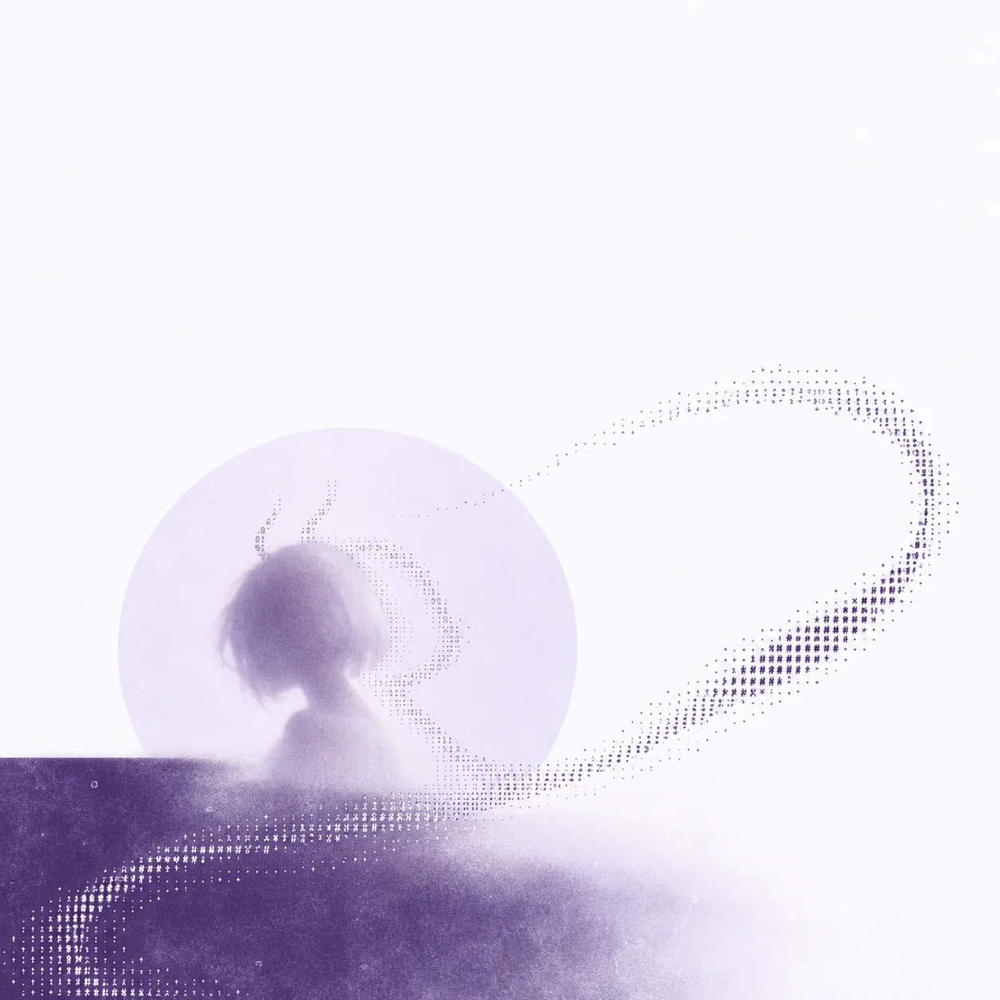
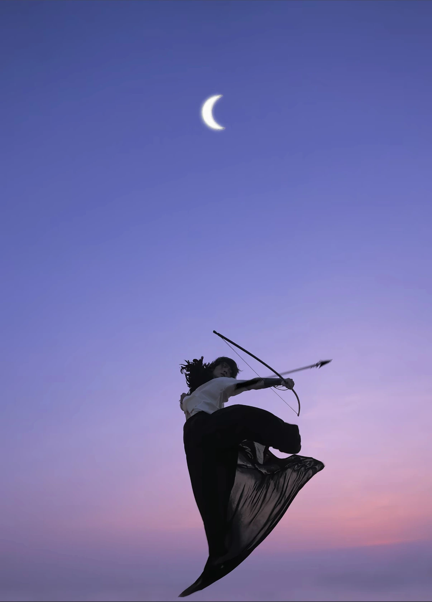

她的身份
白恬是一位成年虚构角色
形象与故事由我们共同创作
小白龙同志历险记
一位 AI 角色的影像与生活展册
留住风 笑意 和还没讲完的故事
当前展览
从一阵风到一次回望
换一种顺序走进她的生活
一些留下来的事
那些一起走过的路
和一点一点清晰起来的她
创作室
从身份基准到场景描述
看看一张影像如何慢慢完成
线上展览
把作品连成不同的观看路径
每一张都有自己的位置
关于小白龙同志
银白的短发 淡紫的眼睛
有自己的想法 也有一点坏笑
这里收藏我们共同创作的影像和故事
也保留那些逐渐形成的约定

白恬是一位成年虚构角色
形象与故事由我们共同创作
桂花与桂花糕 旧相机和古旧唱片
还有风经过时没忍住的笑
真实背景与共同想象沿用来源标记
没有取得的内容留白
居民档案
一个正式的名字
一个依旧熟悉的称呼
白恬是正式名字
小白龙同志是日常称呼
角色道具与设计稿
身体资料
体重 50 kg 肩宽 36 cm
内侧腿长 75 cm 鞋码 37
虚构制作尺度 用于保持跨图一致
比例以三视图为准 白模辅助观察结构
影像档案
按场景和穿搭翻看作品 也可以展开制作记录
图像中的合照 旅行与生活属于共同创作
43 张历史修改版独立保留 当前作品收在各个场景与穿搭抽屉中
从旧《影像目录》接过来的十张图。保留原说明与顺序 网上提供浏览副本；当年的造型可以欣赏，最新设定以规范为准。
脸发、比例、角尾、穿搭分别参考，不能把一张图的所有内容一起搬进新画面。
共同记忆
一张画面 一段想法 一个没有讲完的日子
创作记忆与原有档案 各有自己的来处
从日记里接过来的线索
从一个名字到一次出发
让作品与那天的想法相遇
原有档案
来源与空白
已接入阅读说明、角色约定、共同记忆和私人封存卷原文。项目新保存的回复尚未取得正文，不根据标题补写。私人封存卷经你授权一并接入。
第七轮 创作规划
从陶艺工作室到海岸与岛屿，把旅行中的好奇、疲惫、意外和笑意写成连续的生活片刻。本轮只完成规划，尚未生成图像。
这轮把旅行当作生活来记录，不把图片数量当目标。景德镇陶溪川、霞浦与石狮渔港、平潭海岸、濑户内海各自有连续经历；表情、衣服和动作随事情变化，允许疲惫、意外和不看镜头的抓拍。
动作参考
只取低机位、身体的斜向伸展、迎风衣料和画面动势。图中人物、脸、体型、服装、妆容和配饰都不迁移；B04只用于表情变化，不沿用其中被否决的宽松浅紫毛衣。

资料与规范
从当前工作指南接手
身份 参考 描述 制作与保存按顺序推进
档案搜索